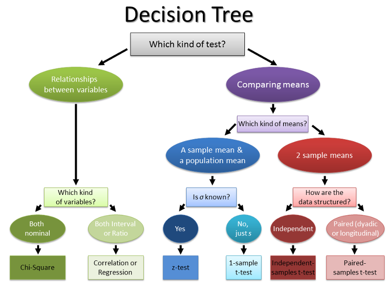

Dale Barr (University of Glasgow)
Mixed-effects workshop, March 3-4, 2022 (Basel)
How do I translate a longitudinal study design into a statistical model for analysis?

A statistical model is a simplification and idealization of reality that captures our key assumptions about the processes underlying data (the data generating process or DGP).
Does being the parent of a toddler sharpen your reflexes?
set.seed(2022) # RNG seed: arbitrary integer value
parents <- rnorm(n = 50, mean = 490, sd = 40)
[1] 526.0057 443.0662 454.1006 432.2199 476.7595 373.9748 [7] 447.6298 501.1182 519.9794 499.6633 530.2474 482.5942 [13] 450.7269 493.7163 487.8886 486.7869 463.8359 451.9727 [19] 530.7825 524.3619 504.5784 505.3460 534.5362 538.4604 [25] 476.0670 455.6179 516.0011 503.1224 469.2821 480.4407 [31] 494.7112 523.2607 427.6432 481.1792 457.3122 533.0671 [37] 533.1866 495.6851 496.2792 483.2512 479.2385 522.3107 [43] 445.0113 432.7685 492.4143 458.2807 503.6110 479.6213 [49] 437.8061 504.7269
control <- rnorm(n = 50, mean = 500, sd = 40)
t.test(parents, control, var.equal = TRUE)
Two Sample t-test data: parents and control t = -3.9699, df = 98, p-value = 0.0001372 alternative hypothesis: true difference in means is not equal to 0 95 percent confidence interval: -47.11091 -15.70863 sample estimates: mean of x mean of y 484.8450 516.2547
summary(aov(rt ~ group, dat))
Df Sum Sq Mean Sq F value Pr(>F)
group 1 24664 24664 15.76 0.000137 ***
Residuals 98 153370 1565
---
codes:
0 ‘***’ 0.001 ‘**’ 0.01 ‘*’ 0.05 ‘.’ 0.1 ‘ ’ 1
\(Y_i = \beta_0 + \beta_1 X_i + e_i\)
\(e_i \sim N(0, \sigma^2)\)
summary(lm(rt ~ group, dat))
Call:
lm(formula = rt ~ group, data = dat)
Residuals:
Min 1Q Median 3Q Max
-110.870 -26.806 1.042 27.810 99.242
Coefficients:
Estimate Std. Error t value Pr(>|t|)
(Intercept) 516.255 5.595 92.28 < 2e-16 ***
groupparent -31.410 7.912 -3.97 0.000137 ***
---
codes:
0 ‘***’ 0.001 ‘**’ 0.01 ‘*’ 0.05 ‘.’ 0.1 ‘ ’ 1
Residual standard error: 39.56 on 98 degrees of freedom
Multiple R-squared: 0.1385, Adjusted R-squared: 0.1297
F-statistic: 15.76 on 1 and 98 DF, p-value: 0.0001372
| sub | A | Y |
|---|---|---|
| 1 | A1 | 778 |
| 2 | A1 | 678 |
| 3 | A1 | 725 |
| 4 | A2 | 819 |
| 5 | A2 | 905 |
| 6 | A2 | 909 |
| sub | stim | A | Y |
|---|---|---|---|
| 1 | A | A1 | 870 |
| 1 | B | A1 | 748 |
| 1 | C | A1 | 826 |
| 2 | A | A2 | 924 |
| 2 | B | A2 | 864 |
| 2 | C | A2 | 700 |
| technique | t-test | ANOVA | regression |
|---|---|---|---|
| Categorical IVs | ✓ | ✓ | ✓ |
| Continuous DVs | ✓ | ✓ | ✓ |
| Continuous IVs | - | ✓ | |
| Multi-level data | - | - | ✓ |
| Categorical DVs | ✓ | ||
| Unbalanced data | - | - | ✓ |
| >1 sampling unit | ✓ |
| structure | response | distrib | R fnc |
|---|---|---|---|
| single | cont | normal | base::lm() |
| single | cont/disc | various | base::glm() |
| multi | cont | normal | lme4::lmer() |
| multi | cont/disc | various | lme4::glmer() |
https://dalejbarr.github.io/basel-longitudinal
Day 1 (single-level data)
Day 2 (multi-level data)